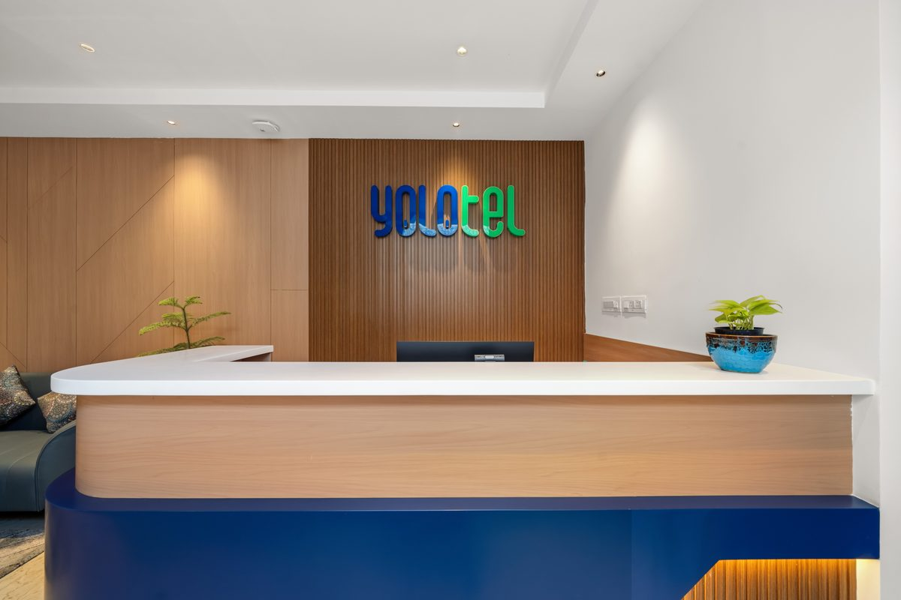
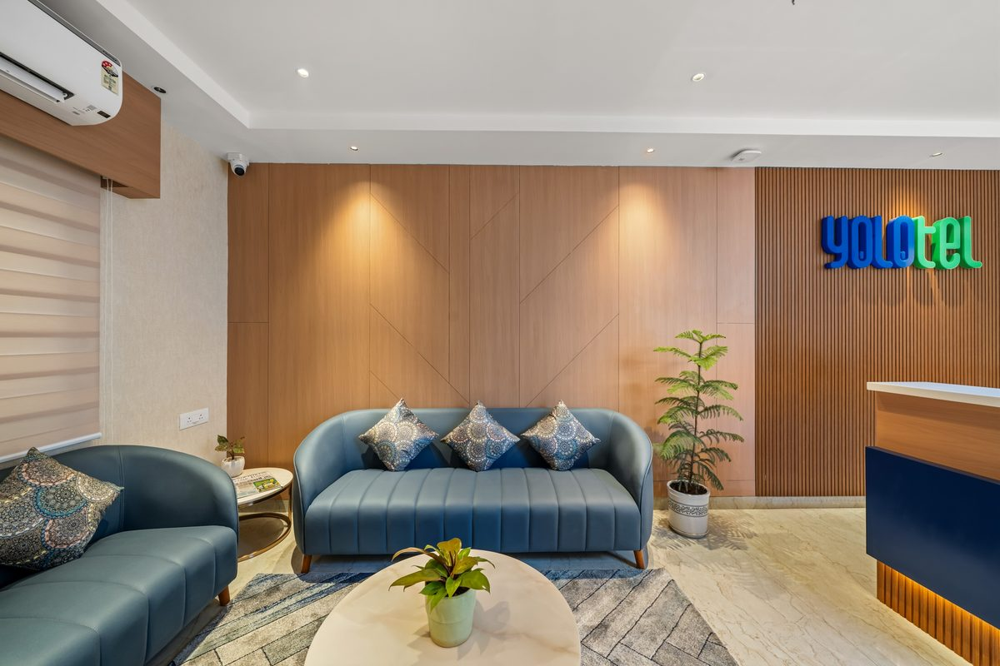
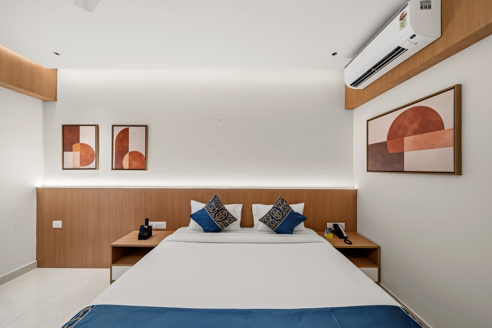
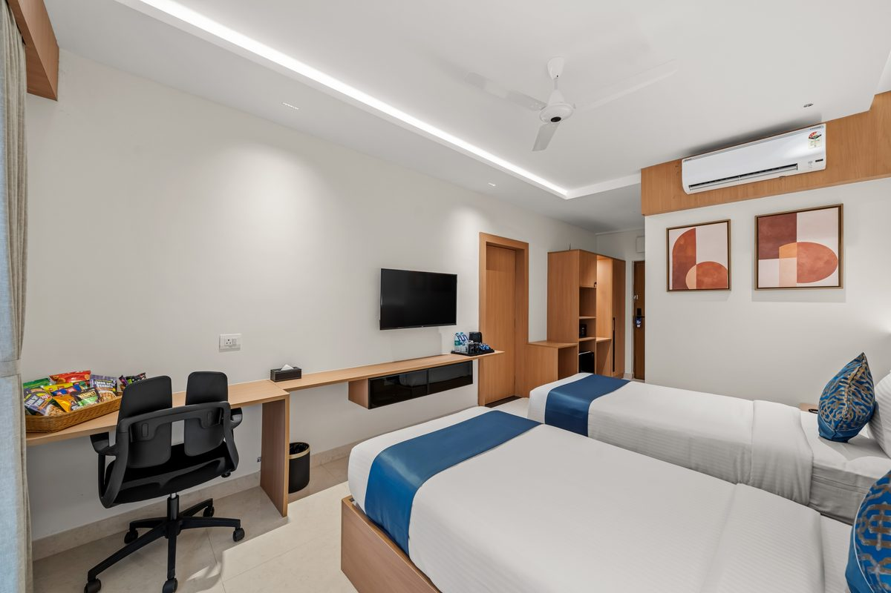
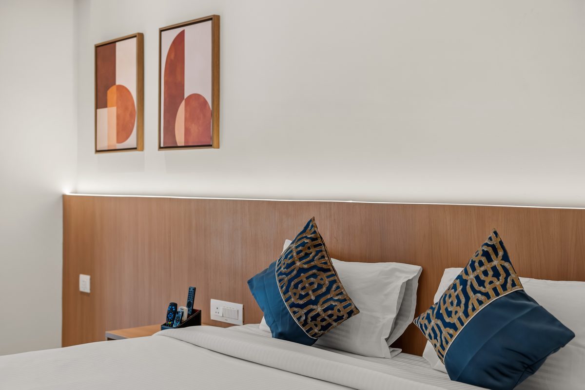
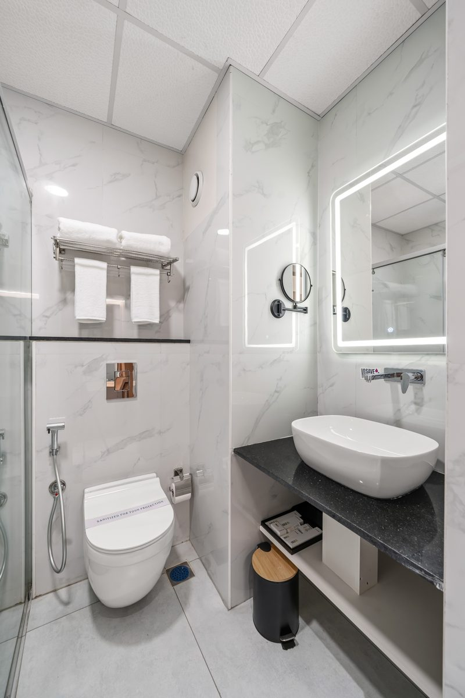
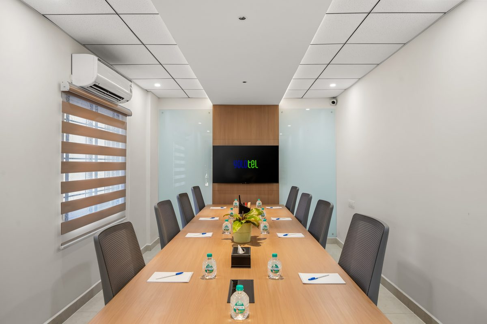

Most hotel rooms get booked when nobody from the hotel is awake. A guest is on their phone at 11 pm, flicking between three or four options on a booking app, and the only thing showing them around is your photos. That was the guest we kept in mind when we did the hotel photography for Yolotel in Bengaluru. Every frame on the shot list had to answer a question that guest would otherwise have asked at the front desk.
Start where the guest arrives
The set opens with reception. It sounds obvious, but a lot of hotel listings lead with a bed and never show the arrival. At Yolotel the reception has a clear identity: a white counter over a navy base, warm timber panelling and the green-and-blue Yolotel sign on the wall behind. One frame of that tells a first-time guest the place is real, staffed and looked after.
We followed it with the lounge beside the desk, the curved blue sofas and the patterned rug. It's the spot where people wait for a cab or a colleague, and showing it makes the hotel feel like more than a corridor of rooms.

Hotel room photography that lets guests compare
Here's where most hotel photos let the guest down. If the standard room is shot wide from the doorway and the premium room is shot tight from a flattering corner, the guest can't tell what the extra money buys. So we photographed every room category the same way: similar camera height, similar corner, the same framing logic. Put the double room with the geometric prints beside the twin room with its work desk and you can see the difference straight away.


Each room got one wide frame that shows the whole layout, from the bed to the window. Then come the details people zoom into before they commit: the pillows and headboard, the desk for anyone travelling for work, and the bathroom.

The bathroom is the photo guests check most carefully and the one hotels most often skip. A clean vertical frame of the marble walls, the backlit mirror and the vessel basin answers the hygiene question before it's asked.

Don't forget the business guest
Yolotel also has a meeting room, and for a company booking a team offsite or a client meeting, that one room can decide the booking. We shot it down the length of the table, chairs set and the screen on, so a travel desk can see at a glance how many people it seats.

What this means for hotel owners
Good hotel photography isn't about making a room look bigger than it is. Guests notice when the room they walk into doesn't match the listing, and that shows up in reviews. The goal is to make the right guest sure they've found their room, and to give the wrong guest enough information to keep scrolling.
If you run a hotel, resort or service apartment and your listing photos are more than a couple of years old, look at them the way that 11 pm guest would. Can they see the arrival? Can they compare your room types fairly? Can they see the bathroom? If any answer is no, that's where to start. For resorts, where the setting matters as much as the room, we've also written about shooting from above and at eye level.
Frequently asked questions
Do you photograph hotels outside Bengaluru?
Yes. We're based in Bengaluru and photograph hotels, resorts, service apartments and homestays across India.
How soon do we get the edited hotel photos?
Edited photographs are typically delivered within 72 hours of the shoot, so new or updated listings can go live quickly.
Should every room category be photographed?
Yes. Guests compare room types before they pay for an upgrade, so each category needs its own wide frame and a few detail shots, photographed the same way so the comparison is fair.
See the full set from this shoot on the Yolotel project page, browse more interior and architecture photography, or get in touch to plan your hotel's shoot.
Follow our latest work on Instagram (@soulandfuel_media) and watch our films on YouTube.